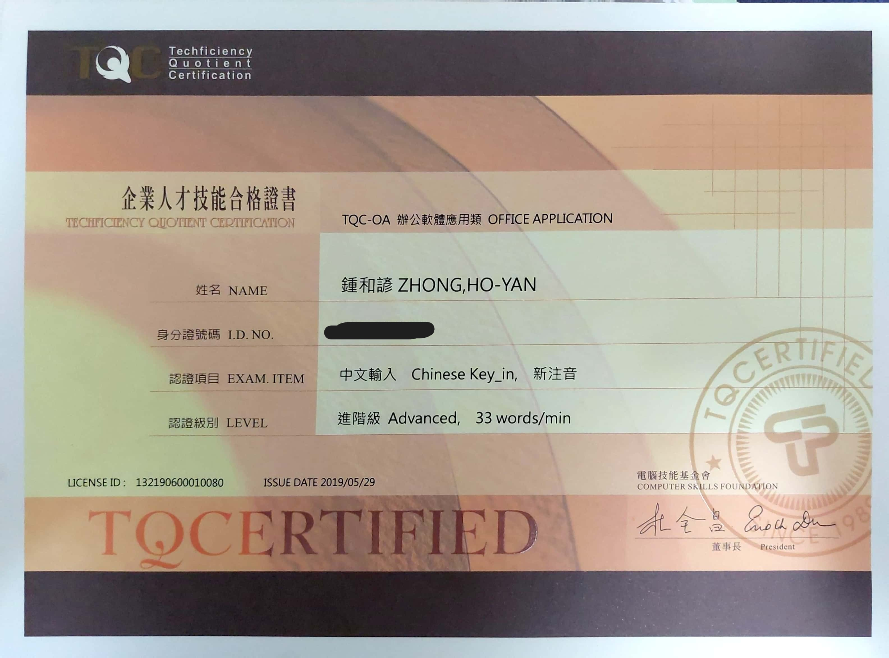

我的求學歷程
自我介紹
我的技能
關於我
我的技能
從高職到線索考取的證照部分詳細圖片~~~
證照名稱:電腦軟體應用丙級
心得:
這是我人生的第一張證照，當初我還在想為什麼老師要我們考這個東西，原來這些證照在未來會對一些技職的學生有一些加分的幫助，且之後還會有更多的證照需要去考取，所以我就進我的全力去爭取這些證明。
證照名稱:網頁設計丙級
心得:
對於這張證照的訓練過程我是很清楚，這也是我第一張的網頁設計證明，整個訓練過程共有五個題型，正式考試會從中抽取其中一個題目作為考試的題目，其中以主題三的題目為最簡單的題目，主題二的題目最難，剛好我信運的抽到了主題三，才順利地拿下這個證照。
證照名稱:電腦軟體應用乙級
心得:
這是電腦軟體應用丙級的下一級，也是進階級，在整個訓練過程中，由於題情變化多端，又需要利用不同的辦公軟體去協調完成整個專案，在這個部份我只有一句話能形容這個考試級別，準地獄級別.....
證照名稱:中華民國商業能力檢定第三級
心得:
這個的考照內容為人工會計記帳的部分，就是寫一般的會計題目，全部選擇題，但是其中的計算過程不能使用計算機計算，這部分來說對於我們比較吃力，但還好最後還是勉強通過www
證照名稱:TQC中文輸入進階級
心得:
這張證照對我來說比較一定的意義，我比較在乎的中打的速度，用這個中文注音的輸入法已經算是很簡單的部分了，但是我還是無法突破我的打字速度。原因是我在邊打邊看文章的時候，腦袋無法順利地接收訊息，導致我打字還是會按到別的鍵或是兩個鍵一起按的狀況，我最後的成績結果是剛好達到一般的程度在上去一點點，這個部份我比較不太滿意，但是我會繼續練下去以達到我理想的速度。

證照名稱:TQC Excel 實用級
心得:
這個是我的第一張辦公室軟體檢定實用級證照，這個excel在處理資料的過程中也是經過許多複雜程序的問題，最後要將所的數據轉換成圖像化顯示出來，雖然這個式基礎的處理程序，但還是覺得這個要快速上手也不容易。
證照名稱:電子商務分析師標準級
心得:
這是我大學的第一張證照，這個就比較相對入門，會考歷年的題庫作為考試，所以我們就只需要詳讀歷年的考題即可過關，而且這一張我覺得很讚，畢竟是大學期間所考取的www
證照名稱:Certiport Network Security
心得:
這是我第一也是目前唯一的國際證照，屬於資訊安全的證照考試，這個部分考試內容是考歷屆的題庫內容，我原本以為有可能是原文題庫，結果是中文題庫，還好鬆了一口氣，最後也是順利地通過了。